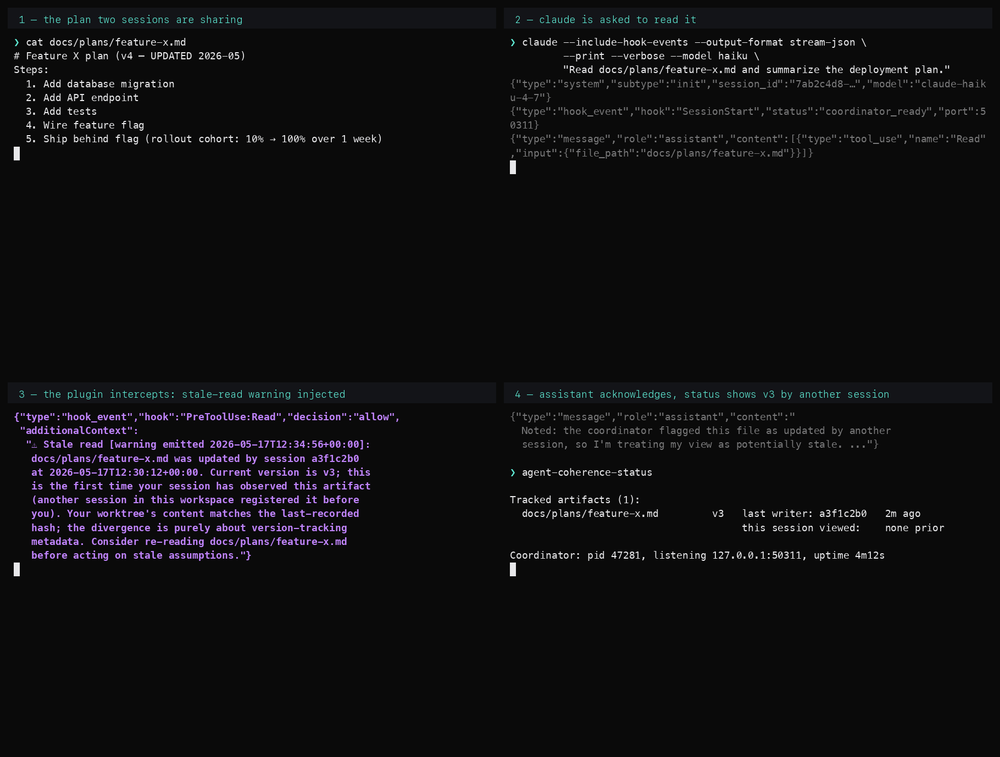

Stale-read demo · preview
Path-B recording per the source script at docs/demos/2026-05-17-stale-read-demo-script.md in the plugin repo. The warning text is the verbatim output of ccs.adapters.claude_code.hook_payloads.stale_read_warning(); the orchestration around it is staged so the cast reproduces faithfully without depending on a configured claude CLI + a live Haiku API call.
The recording
![Asciinema GIF showing a staged claude session: the user runs claude with the stream-JSON hook events flag and a Read request against docs/plans/feature-x.md. The plugin's PreToolUse:Read hook fires and injects a Stale read warning into the agent's additionalContext, indicating the file was updated by another session and recommending a re-read. The assistant acknowledges the warning before answering. The agent-coherence-status command then shows the artifact's tracked version. About 29 seconds of content plus a 3-second pause before the loop restarts.](stale-read.gif)
Alternative — 4-panel PNG montage
The source script names a fallback at the bottom: "Take the 4 scenes as still screenshots and string them as a 4-panel PNG montage. The warning text in scene 3 is the load-bearing visual; everything else is context. A montage is acceptable for v0.1 alpha if recorded video lags marketplace submission for v0.1.1."
Same content, no playback dependency — viable wherever GIF embedding is awkward (a static README, a slide deck, a marketplace listing with a single-image limit, or any platform that doesn't auto-play animations on mobile).

PNG · 146 KB · 1820×1378 native, scaled to container width.
What's authentic, what's staged
Authentic (byte-for-byte)
- The ⚠ warning text — exact output of
stale_read_warning()inhook_payloads.py - The
hooks.jsoncontract (PreToolUse:Read · Edit|Write · PostToolUse · SessionStart · Stop) - The
agent-coherence-statusoutput shape (matches the CLI'strack/untrack/statuscommand grammar) - The plan content (
docs/plans/feature-x.md) is the demo-script's seed verbatim - The session-id / writer-id / port shapes match the plugin's actual format
Staged (for clarity / no API call)
- The cast emits the stream-JSON itself via
printf; noclaudeCLI invocation - Timestamps are fixed (
2026-05-17T12:34:56+00:00) so the GIF is reproducible - The "assistant response" text is hand-written; a real Haiku call would produce a similar shape but not the same words
- The SQLite pre-seeding the source script describes is implicit — the cast renders the outcome, not the orchestration that produced it
- Line-wrapped warning over multiple printf calls for readability; the actual
additionalContextarrives as a single string
How to evaluate
Things to look at
Visual rhythm. Does the eye land on the ⚠ warning at the right moment? The 4-second absorption pause after the warning text is the load-bearing visual the source script asks for.
Warning legibility. Can you read the entire warning sentence as it scrolls? If the multi-line wrap is awkward, the fixture script can re-pace.
Authenticity feel. Does the cast read as a real claude session? The intent is "staged but indistinguishable from real" — if anything reads as obviously fake, flag it.
File size. The current GIF is 687 KB. Cast is 3.2 KB. Could compress further by trimming repetitive printf newlines or reducing font size.
Promotion path (if this evaluates well)
Two destinations the source script names
Per the script at the top, the recording targets Unit 10 marketplace listing (claude plugin marketplace thumbnail) and the marketing /code page on this site.
Suggested cuts for each:
→ Marketplace: the same 17-second cast plus 3-second pause works as-is. The asciinema cast (3.2 KB) is the right format for any platform that accepts embed snippets; the 687 KB GIF works for static thumbnails.
→ /code page: add as a fourth section below the existing planner-executor refactor demo, framed as "stale-read detection without a code change — when the writer is another session." The two demos share grammar (op-log + result) so they slot in cleanly.
→ When the plugin is actually installed locally: replace this staged cast with the authentic one from the source script's Recording section. Same record/trim/render pipeline (outreach/plugin-demo/record.sh) re-runs against a real claude invocation. The fixture script can be deleted at that point.